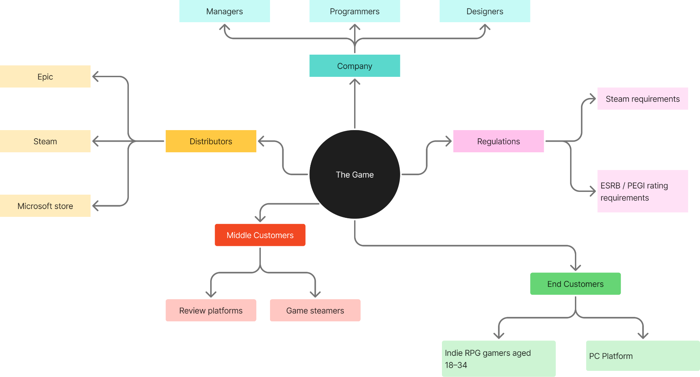
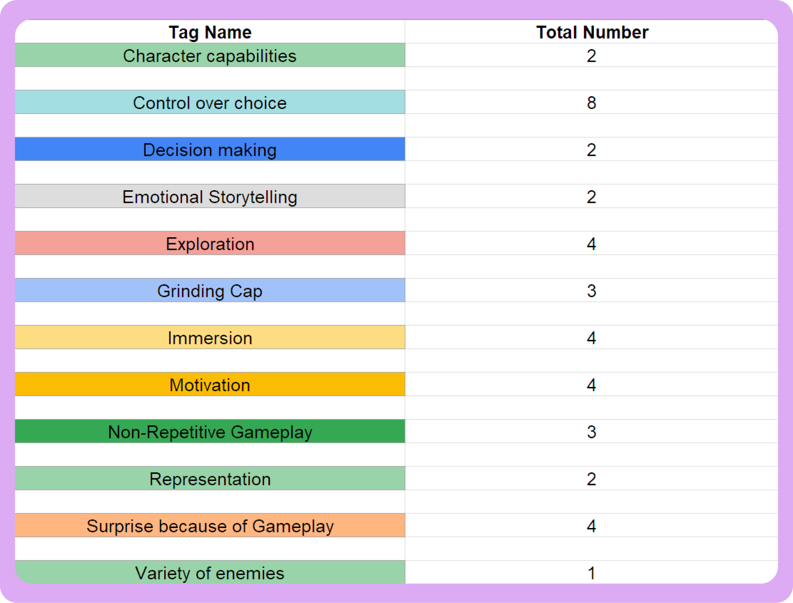
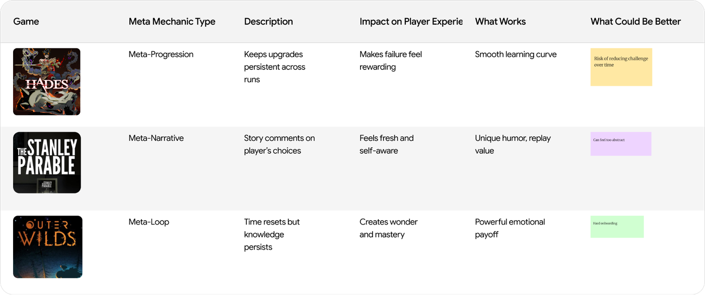
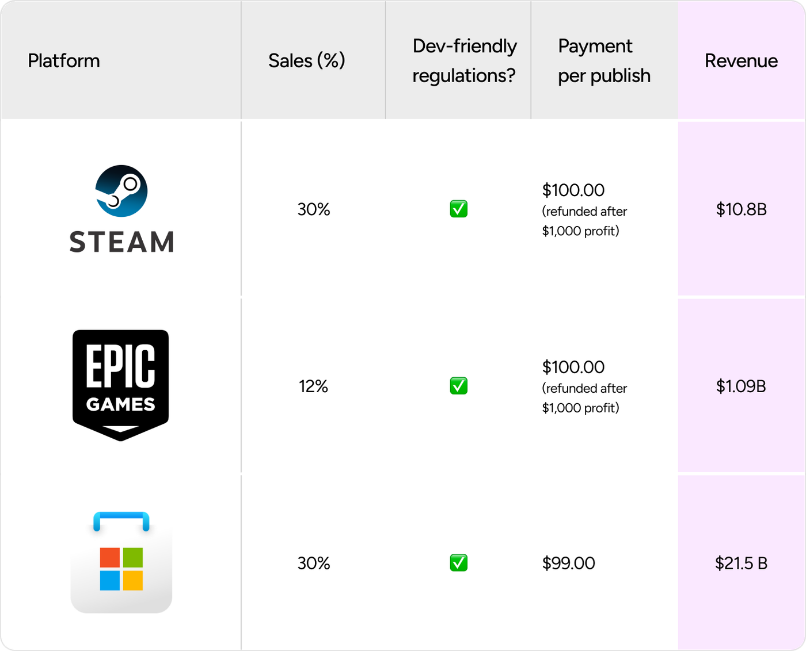
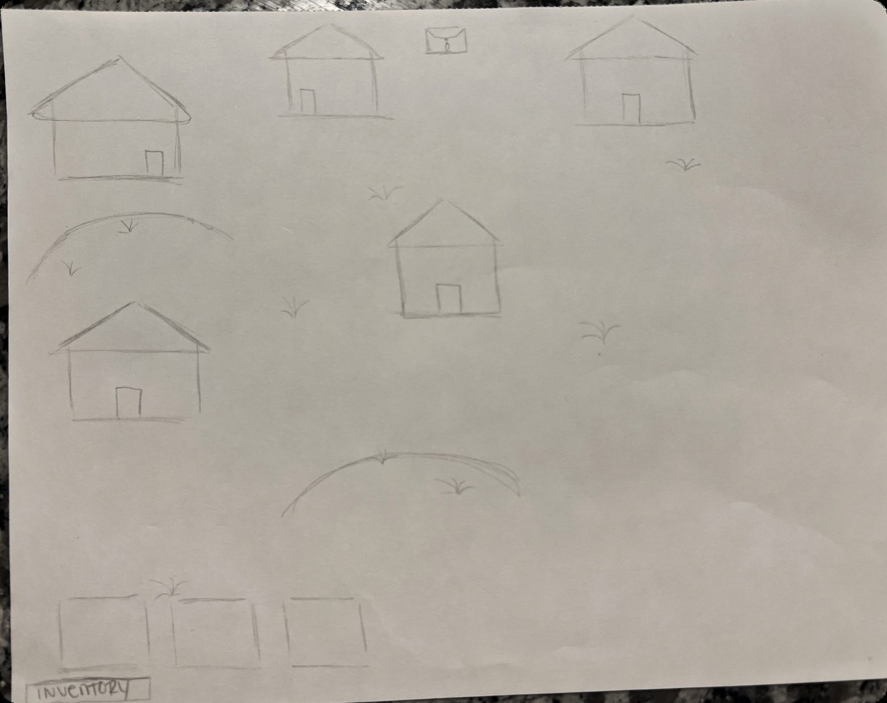
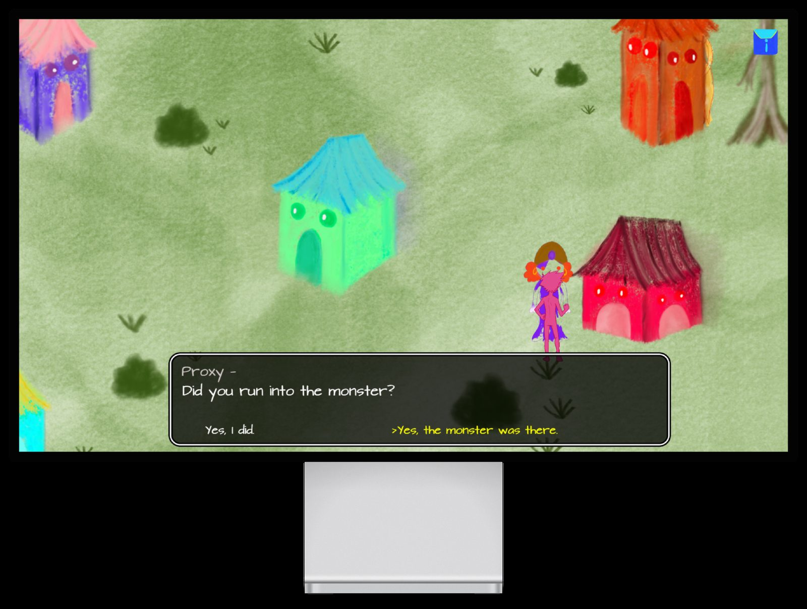
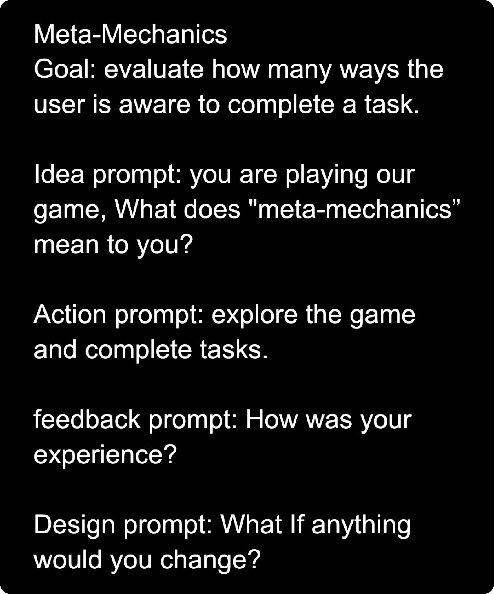
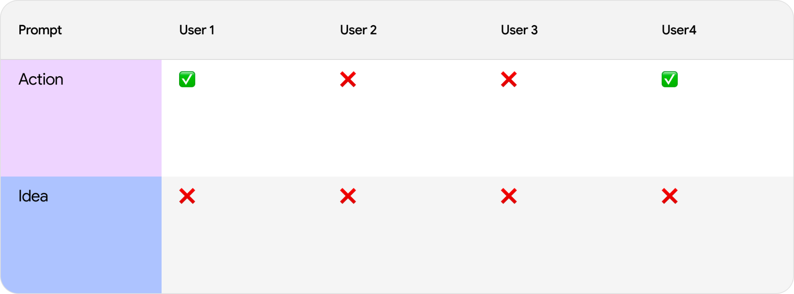
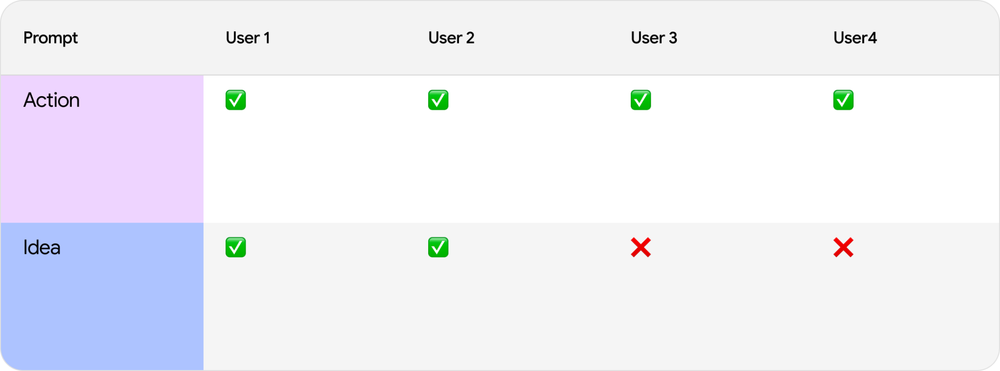

Designing a meta-narrative 2D RPG
The pitch: a 2D RPG where predictability becomes unpredictable — meta mechanics and non-linear narrative combined to break the fourth wall. Built from a persona (Max, a SCAD student burnt out on predictable 2D RPGs), through market sizing, competitor audits, 12 user interviews, and wireframes. Team project with Kushagra, Ivy, Bailiang, and myself.
Methodology
Primary research — 12 semi-structured interviews, 45–60 min each, run against a written interview guide with a consistent intro/question/wrap-up structure — ran alongside secondary research (market sizing, competitor audits, a product/stakeholder journey map) toward four questions: what indie players expect from 2D RPGs, what narrative styles keep them engaged, which mechanics feel overused, and how open players are to rule-breaking mechanics.

Journey mapping & synthesis
Before designing anything, we mapped where the product itself sits in the market — how it moves from the studio through distributors and regulations to reach players, and who touches it along the way. Interview data went through the same rigor: every transcript was open-coded into tags, the tags were cleaned and merged, then clustered into themes — an affinity-mapping pass that turned 12 conversations into a small set of weighted, citable patterns instead of just anecdotes.


Competitive & cultural analysis
Reading the meta-games niche as a culture, not just a market: how three existing titles each use self-awareness differently, and where the actual money moves once a game like this gets sold.


From sketch to hi-fi


Usability testing
Once the hi-fi wireframe existed, we ran moderated, task-based usability tests against it — a written task card per mechanic (a goal, an in-fiction idea prompt, an action to perform, then feedback and design questions), scored pass/fail across four users. Running the same tasks with and without in-game hints showed exactly where the meta-narrative concept needed clearer signposting, not just a good idea.



Reflection: what went right was the programming, artwork, and secondary research; what the team would tighten next time was feature/benefit sorting, running interviews more consistently, and keeping bias out of the interview process itself.
The full deck (with team contributions from Kushagra, Ivy, and Bailiang alongside mine) runs 226MB with embedded video — too large to host directly. Reach out and I'll send it over.